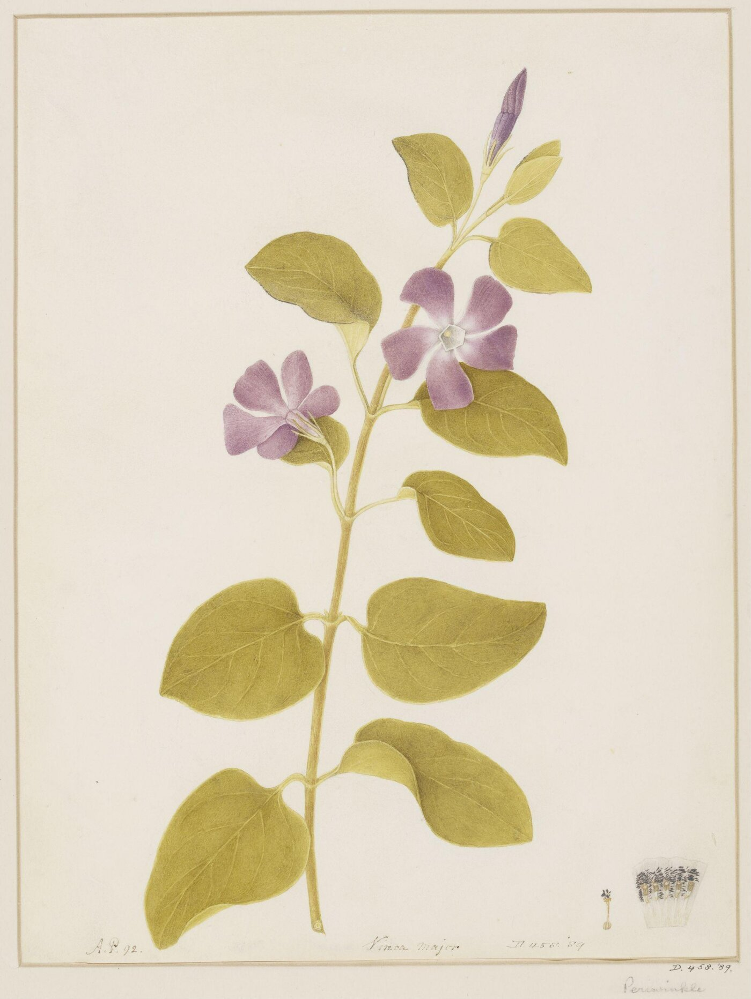

作品名 「ツルニチソウ」
花言葉 「優しい思い出」「楽しき思い出」「生涯の友情」「幼馴染み」
ツルニチソウ
「生涯の友情」
ツルニチニチソウ（蔓日々草）は常緑多年草のつる性植物で、株元から多数の茎をのばしてつる状に生長します。どんどんとツルを広げ、根付く様子から、「生涯の友情」という花言葉がつきました。
ツルニチソウ
パワー
パワー画とされていますが、この人の経歴はわかっていない。ケント州のメイドストンで活動していた。エーレットの影響を受けたと言われている。日本の文人画のような雰囲気の水彩画である。
| 作品名 | ツルニチソウ |
| 作者 | パワー |
| 制作年 | 1792年 |
| 所蔵 | ヴィクトリア＆アルバート美術館 |